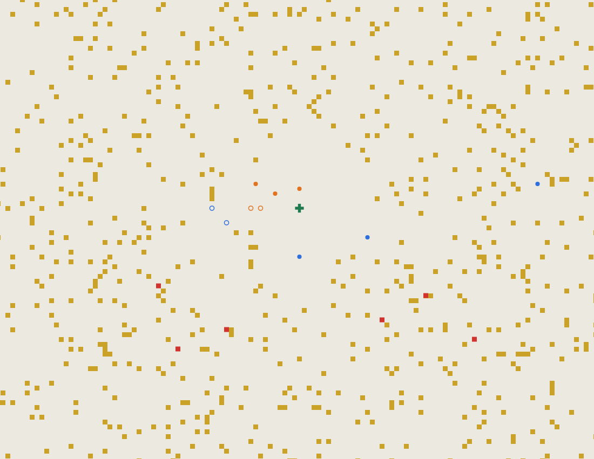
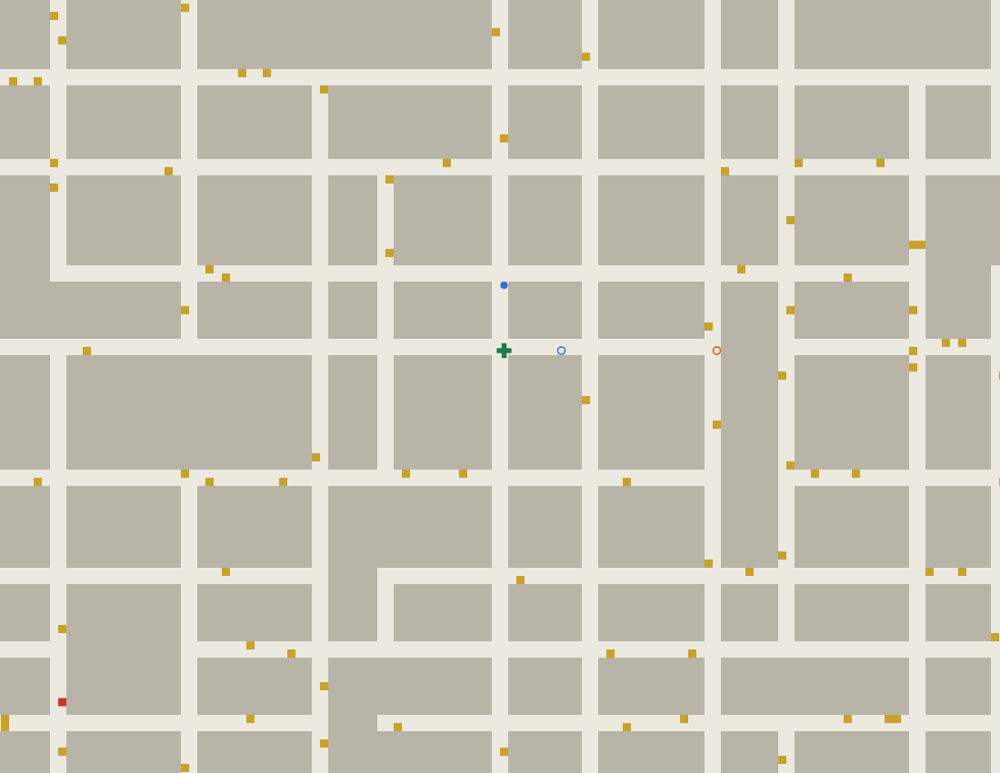
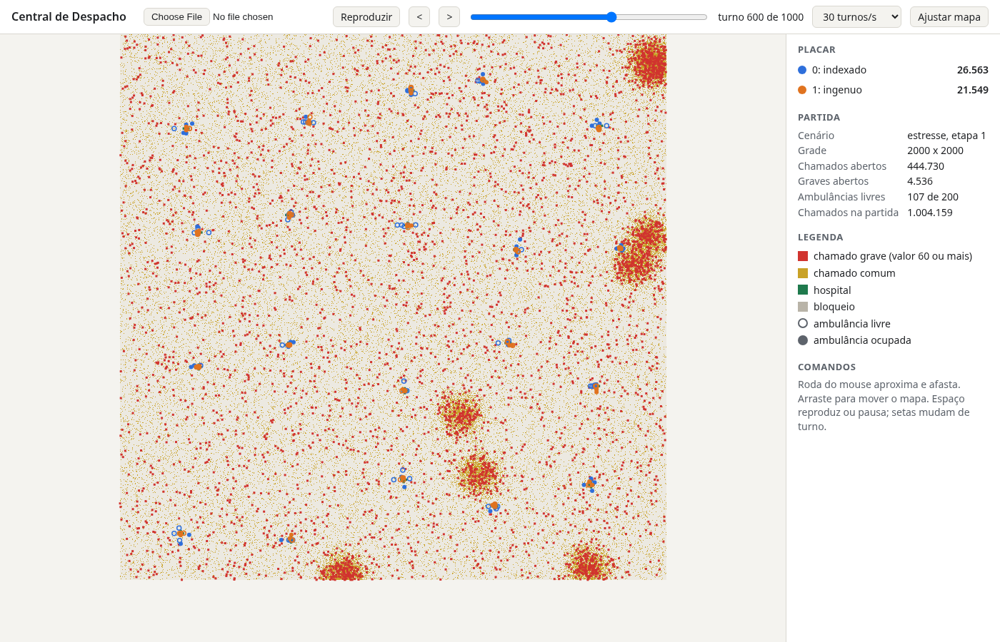

DS143 Estruturas de Dados II, trabalho prático 2026/2
Central de Despacho
Você vai escrever o programa que comanda uma frota de ambulâncias numa cidade. A cada turno surgem chamados de emergência; seu bot decide para onde cada ambulância vai, disputando os pacientes com o bot de outra equipe. Quais estruturas de dados usar é decisão sua, e é isso que o trabalho avalia.
01O jogo
A cidade é uma grade de células. Algumas células são hospitais. A cada turno, novos chamados aparecem na grade, cada um com um valor e um prazo. Uma ambulância livre que chega à célula de um chamado dentro do prazo recolhe o paciente. A equipe só pontua quando a ambulância entrega o paciente num hospital, qualquer um deles. Cada ambulância leva um paciente por vez.
O servidor do jogo, fornecido pelo professor, simula a cidade e coloca o seu bot para disputar com outro bot no mesmo mapa. Vence a equipe com mais pontos ao fim do último turno.

O enunciado não diz quais estruturas de dados usar. O cenário mais pesado foi dimensionado para que guardar os chamados num slice e percorrer tudo a cada turno fique muitas vezes mais lento que o bot de referência, e o teste de tempo compara o seu bot com essa referência.
Objetivos
Ao concluir o trabalho, você deverá ser capaz de:
- escolher estruturas de dados a partir das operações que um problema exige, da escala dos dados e de um limite de tempo, justificando a escolha pela complexidade de cada operação;
- comparar a sua escolha com pelo menos uma alternativa e explicar em que situação a alternativa seria melhor;
- implementar em Go as estruturas escolhidas, sem recorrer às estruturas prontas da biblioteca padrão;
- adaptar a solução quando o problema muda, como acontece na etapa 2, em que o mapa ganha obstáculos e a distância passa a depender de um percurso em grafo.
02Regras
Grade e movimento
A grade tem largura colunas e altura linhas. A coluna x cresce da esquerda para a direita; a linha y cresce de cima para baixo, como nas coordenadas de tela. A cada turno, cada ambulância faz um movimento:
Movimentos
O que vale
- Ambulâncias podem ocupar a mesma célula, inclusive de equipes diferentes. Não há colisão.
- Sair da grade ou, na etapa 2, entrar numa célula bloqueada é infração: a ambulância fica parada naquele turno.
- Todas as ambulâncias começam livres, sobre os hospitais. As duas equipes começam em posições simétricas.
Chamados
- Cada chamado tem identificador, posição, valor e prazo. O prazo é o último turno em que o paciente ainda pode ser recolhido.
- O identificador é um inteiro positivo, único na partida e sem ordem: não é sequencial e não serve de índice.
- Cerca de 5% dos chamados são graves: valem de 60 a 100 pontos e têm prazo curto. Os demais valem de 1 a 20 pontos e têm prazo longo. A mensagem não marca o chamado como grave; o valor e o prazo bastam para reconhecê-lo.
- Chamados nunca aparecem em célula bloqueada nem em hospital, e todo chamado é alcançável a partir de algum hospital.
- O servidor avisa quando um chamado é recolhido por qualquer equipe. O servidor não avisa quando um chamado expira: o seu bot precisa saber, pelo prazo, quais chamados ainda valem.
Ordem de um turno
- O servidor envia ao bot o estado do turno
t: chamados novos, chamados recolhidos no turno anterior, posição e estado das suas ambulâncias e o placar. - O bot responde com um movimento para cada ambulância.
- O servidor aplica os movimentos de todas as equipes ao mesmo tempo.
- Cada ambulância livre que termina o movimento na célula de um chamado aberto, com prazo maior ou igual a
t, recolhe um paciente e passa a ocupada. Numa célula com vários chamados, os de maior valor são recolhidos primeiro; em caso de empate no valor, o de menor identificador. - Se uma célula tiver mais ambulâncias livres que chamados, da mesma equipe ou de equipes diferentes, o servidor sorteia quais recolhem, usando a semente da partida.
- Cada ambulância ocupada que termina o movimento num hospital entrega o paciente, a equipe soma o valor do chamado e a ambulância volta a ficar livre. Ela só pode recolher outro paciente no turno seguinte.
03Etapas
Etapa 1: grade aberta
Não há células bloqueadas. A distância entre duas células é a distância de Manhattan, |x1 - x2| + |y1 - y2|, e qualquer caminho em que cada movimento reduza essa distância em 1 é um caminho mais curto.
Decisões que o seu projeto precisa tomar
- como achar, a cada turno, os chamados abertos próximos de cada ambulância;
- como descartar os chamados que expiraram sem varrer todos eles;
- como remover um chamado que outra equipe recolheu, sabendo só o identificador;
- como evitar que duas ambulâncias da sua equipe sigam para o mesmo chamado;
- como achar o hospital mais próximo de uma ambulância ocupada.
Cada decisão é uma pergunta sobre estrutura de dados. O seu relatório de projeto e a defesa giram em torno delas.
Etapa 2: quarteirões e ruas fechadas
O mapa ganha retângulos de células bloqueadas, que representam quarteirões e ruas fechadas. As ruas têm duas células de largura, inclusive na borda do mapa, e um trecho de rua fechado bloqueia a largura inteira. A distância de Manhattan deixa de valer: o caminho mais curto agora contorna os bloqueios, e calculá-lo é um problema de percurso em grafo, assunto da parte final da disciplina. Os bloqueios são fixos durante a partida.

Decisão nova: calcular caminhos a cada turno ou calcular uma vez, no tempo de preparo, e guardar o resultado. A memória disponível limita o que pode ser guardado.
04Protocolo
O servidor executa o seu programa como subprocesso. A conversa é por texto, uma informação por linha: o servidor escreve na entrada padrão do bot e lê a saída padrão. Os campos de uma linha são separados por um espaço. A saída de erro é descartada e pode ser usada para depuração. O bot ingênuo do kit já implementa o protocolo inteiro.
Abaixo, o começo de uma partida numa grade de 200 x 200, com duas equipes, mensagem por mensagem. Para caber aqui, o mapa tem só dois hospitais e duas ambulâncias por equipe.
INICIO 200 200 500 100 2000 0 2 HOSPITAIS 2 20 30 150 170 AMBULANCIAS 2 0 20 30 1 150 170 BLOQUEIOS 0 FIM
INICIO largura altura turnos limite_turno_ms limite_preparo_ms equipe num_equipes. Aqui, grade de 200 x 200, 500 turnos, e você é a equipe 0 de 2.
AMBULANCIAS lista só as suas, com identificadores de 0 a k-1, cada uma num hospital.
BLOQUEIOS traz retângulos x1 y1 x2 y2, cantos incluídos. Na etapa 1 vem sempre 0.
PRONTO
Depois de ler o FIM, o bot tem limite_preparo_ms (2 segundos) para responder PRONTO. Use esse tempo para qualquer pré-processamento.
TURNO 1 CHAMADOS 2 1683149752 25 30 15 120 2096790314 140 160 75 60 RECOLHIDOS 0 AMBULANCIAS 2 0 20 30 LIVRE 1 150 170 LIVRE PLACAR 2 0 0 1 0 FIM
CHAMADOS traz só os chamados que surgiram neste turno: id x y valor prazo.
O primeiro vale 15 e pode ser recolhido até o turno 120. O segundo vale 75 com prazo 60: é um chamado grave.
RECOLHIDOS lista os chamados recolhidos no turno anterior, por qualquer equipe, inclusive a sua.
Cada ambulância vem com id x y estado, e estado é LIVRE ou OCUPADA.
0 L 1 N FIM
Uma linha id direcao por ambulância, em qualquer ordem. A ambulância 0 vai para leste, rumo ao chamado comum a 5 células. A ambulância 1 vai para norte, rumo ao chamado grave a 20 células (10 para oeste e 10 para norte).
Ambulância que não aparece na resposta fica parada. Linha malformada, identificador inexistente ou repetido conta como infração.
Os turnos vão de 1 a turnos. Ao fim do último turno, o servidor fecha a entrada padrão do bot, que deve terminar ao ler o fim da entrada.
Tempo de cada turno
O servidor mede o tempo de processador que o bot gasta entre o FIM do servidor e o FIM da resposta, somadas todas as threads. Tempo em que o bot espera, ou em que o sistema atende outro programa, não conta.
limite_turno_ms é um teto de 100 ms, alto de propósito, para um bot travado não atrasar a partida. Acima dele, o servidor descarta a resposta, as ambulâncias da equipe ficam paradas naquele turno e o servidor registra um estouro de tempo. A velocidade do seu bot é avaliada pelo teste de tempo, descrito em Avaliação, e não pelo teto. O servidor também espera no máximo dez vezes o teto em tempo de relógio; uma resposta que chega depois disso é usada no turno seguinte, se a do próprio turno não chegar a tempo.
05Cenários e limites
Os três cenários existem nas duas etapas; na etapa 2, recebem quarteirões e ruas fechadas.
| Cenário | Grade | Ambulâncias por equipe | Hospitais | Chamados novos por turno | Prazo dos comuns | Prazo dos graves | Chamados abertos (pico) | Turnos |
|---|---|---|---|---|---|---|---|---|
pequeno | 200 x 200 | 5 | 4 | 2 | 50 a 200 | 20 a 80 | cerca de 250 | 500 |
medio | 1000 x 1000 | 20 | 10 | 40 | 100 a 600 | 30 a 150 | cerca de 13 mil | 1000 |
estresse | 2000 x 2000 | 100 | 20 | 1000 | 100 a 1000 | 30 a 150 | cerca de 500 mil | 1000 |
Os prazos são contados em turnos a partir do turno em que o chamado surge. O número de chamados novos varia até 25% para cima ou para baixo a cada turno. Cerca de 30% dos chamados nascem concentrados em torno de alguns pontos fixos do mapa; os demais se espalham por todo o mapa.
| Limite | Valor |
|---|---|
Teto por turno (limite_turno_ms) | 100 ms de tempo de processador |
Tempo de preparo (limite_preparo_ms) | 2000 ms |
| Memória do processo | 512 MB; acima disso, o servidor encerra o bot, que fica parado até o fim da partida |
| Processadores | o bot roda com GOMAXPROCS=1, preso a um núcleo do processador |
06Restrições de implementação
- Linguagem Go, versão 1.22 ou posterior. A correção compila com Go 1.26, e o
go.modda entrega não pode pedir versão mais nova que essa. O programa deve compilar comgo buildna raiz da entrega, que contémgo.mode o pacotemain. - Não use o tipo
mapnem os pacotescontainer/heap,container/listecontainer/ringem nenhum arquivo.goda entrega, exceto nos arquivos de teste (_test.go). Bibliotecas de terceiros também estão proibidas. O corretor procura esses usos, e a entrega que tiver algum fica com zero nos testes de pontuação da etapa, os que comparam a sua soma de pontos com a de um bot de referência. - Fora o que está proibido acima, a biblioteca padrão pode ser usada.
- Você pode reaproveitar o código que escreveu nas atividades avaliativas da disciplina, como a árvore AVL e a tabela hash, desde que seja seu.
Leia e escreva com buffer
Use bufio. No cenário de estresse chegam cerca de mil linhas por turno; com fmt.Scan direto, só a leitura consome boa parte do tempo do turno.
Cuidado com o custo amortizado
O teste de tempo olha os turnos mais caros, e não a média. O append que dobra a capacidade de um slice tem custo amortizado constante, mas pode copiar dezenas de megabytes num turno só.
07Kit inicial
Publicado no UFPR Virtual até 14/10:
- o servidor do jogo, em Go, com código-fonte;
- o bot ingênuo, que já implementa o protocolo inteiro, guarda os chamados num slice e escolhe, para cada ambulância livre, o chamado mais próximo percorrendo todos;
- o bot indexado de referência da etapa 1 e o bot de referência da etapa 2, só os executáveis;
- dez sementes de treino para cada cenário;
- o corretor, que roda com as sementes de treino a mesma suíte de testes usada na correção e mostra os pontos que a sua entrega faria;
- o visualizador, que reproduz no navegador a partida gravada pelo servidor.
O kit sai em cinco versões, com o mesmo conteúdo: uma para Linux, uma para Windows, duas para macOS (processador Apple e processador Intel) e uma para Docker. A versão para Docker traz um Dockerfile que monta, no seu computador, uma imagem com o Go na mesma versão da correção e com o servidor, o corretor e os bots de referência já instalados. O arquivo LEIAME.md de cada kit explica como usá-lo. As versões para Windows e macOS, e a versão para Docker fora do Linux, ainda não foram testadas nesses sistemas. Se alguma não funcionar no seu computador, avise o professor por mensagem no UFPR Virtual, com o sistema, o comando usado e a mensagem de erro.
O bot ingênuo passa no cenário pequeno. No estresse, fica dezenas de vezes mais lento que o bot indexado e passa do teto em cerca de 10% dos turnos. O trabalho começa por decidir o que substituir nele.
Como jogar uma partida
go build -o meubot . ../bin/servidor -cenario medio -etapa 1 -semente 7 -replay partida.jsonl ./meubot ../bin/indexado
Os comandos desta seção valem para Linux e macOS, a partir da pasta ingenuo do kit. No Windows, os executáveis têm a extensão .exe. No contêiner Docker, o servidor, o corretor e os bots de referência estão no PATH, e o comando fica servidor ... ./meubot indexado.
O servidor imprime o placar, as infrações, os estouros e o tempo de processador por turno de cada bot. Com -replay, grava a partida para o visualizador.
Como ver a partida
Abra visualizador/index.html no navegador e escolha o arquivo partida.jsonl. A roda do mouse aproxima, arrastar move o mapa, a barra de espaço reproduz ou pausa.

Como estimar a sua nota
../bin/corretor -etapa 1 -sementes 1-10 -bin ../bin .
O corretor compila a entrega do jeito que a correção compila, joga as partidas de cada teste e grava um relatório com os pontos, as partidas e o uso de recurso proibido, se houver. A correção usa outras sementes, então a pontuação final pode variar um pouco.
08Entregas e prazos
- 14/10Kit inicialPublicado no UFPR Virtual. Não é entrega; marca o começo do trabalho.
- 21/10Declaração de uso de IAQuestionário no UFPR Virtual. A declaração é irrevogável.
- 11/11Etapa 1: código e relatório de projetoTarefa no UFPR Virtual
- 25/11Prova presencial 2Não é entrega do trabalho; está aqui para você planejar a etapa 2.
- 29/11Etapa 2: código finalTarefa no UFPR Virtual
- 02/12DefesaSó na modalidade sem IA. Presencial, em sala.
Não há entrega com atraso. A tarefa do UFPR Virtual fecha às 23h59 do dia do prazo, e a etapa sem entrega fica com zero em tudo o que vale naquela etapa. A declaração de uso de IA segue a mesma regra: sem declaração até 21/10, o trabalho fica na modalidade com IA.
O trabalho pode ser feito individualmente ou em dupla. Em dupla, os dois enviam a declaração de uso de IA, que precisa ser a mesma, e os dois enviam o mesmo arquivo de código, com os dois nomes no README.md. Cada entrega é um .zip com a raiz do módulo Go; a da etapa 1 inclui o arquivo relatorio_de_projeto.md, opcional na modalidade com IA.
Relatório de projeto
No máximo uma página. Para cada decisão listada na etapa 1, responda qual estrutura você usou, qual o custo das operações que o bot faz nela a cada turno e qual alternativa você considerou e por que a descartou. Ele precisa descrever o código entregue, e é material da defesa: espere perguntas sobre cada linha dele. Um esqueleto possível:
# Relatório de projeto: Fulana de Tal ## Achar os chamados próximos de uma ambulância Estrutura: ... Custo por turno: ... Alternativa descartada: ..., porque ... ## Descartar os chamados expirados Estrutura: ... ...
09Avaliação
O trabalho vale 30% da média, com nota de 0 a 100. Até 21/10, você declara se vai usar IA generativa. A declaração define a modalidade:
Sem IA: até 100 pontos
Suíte de testes (60), relatório de projeto (10) e defesa presencial de 10 a 15 minutos (30). Em dupla, cada um responde e recebe a própria nota de defesa.
Com IA: até 60 pontos
Só a suíte de testes. Não há defesa, e o relatório de projeto é opcional e não é avaliado.
Como prevê o plano de ensino, se você declarou que não usaria IA e não conseguir explicar partes do seu código na defesa, ou se o uso de IA for identificado por outro meio, a nota máxima do trabalho passa a ser 50.
Suíte de testes
A suíte vale 60 pontos e é a mesma nas duas modalidades. Cada teste joga partidas de um contra um: o seu bot contra um bot de referência, com sementes fixas que não são as de treino. O seu bot alterna de lado (equipe 0 ou 1) de uma semente para a outra. A nota sai por limiar, sem comparação com bots de colegas. Os limiares dos testes (a razão de tempo e as margens de pontuação) foram calibrados no computador que roda a correção. Se algum precisar de ajuste, o ajuste sai até 21/10, como aviso no UFPR Virtual e com um kit novo.
| Etapa | Teste | Critério | Pontos |
|---|---|---|---|
| 1 | Protocolo | Nenhuma infração em 10 partidas do cenário pequeno | 10 |
| 1 | Tempo | p99 do tempo de processador por turno até 4 vezes o do bot indexado, na mediana de 10 partidas do estresse, sem passar do teto em mais de 10 turnos de nenhuma partida | 15 |
| 1 | Bot ingênuo | Soma de pontos pelo menos 10% maior que a do bot ingênuo em 10 partidas do medio | 10 |
| 1 | Bot indexado | Soma de pontos pelo menos 2% maior que a do bot indexado em 10 partidas do estresse | 10 |
| 2 | Protocolo e tempo | Nenhuma infração e p99 do tempo de processador por turno até 4 vezes o do bot da etapa 2, na mediana de 10 partidas do estresse com bloqueios, sem passar do teto em mais de 10 turnos de nenhuma partida | 7 |
| 2 | Bot de referência | Soma de pontos pelo menos 2% maior que a do bot da etapa 2 em 10 partidas do medio com bloqueios | 8 |
Os testes da etapa 1 rodam sobre a entrega da etapa 1; os da etapa 2, sobre a entrega da etapa 2. A margem exigida nos testes de pontuação existe porque dois bots idênticos terminam com somas diferentes, por causa dos sorteios de desempate.
Como funciona o teste de tempo
O p99 é o tempo de processador abaixo do qual ficam 99% dos turnos do bot. A razão é o p99 do seu bot dividido pelo p99 do bot de referência, medidos na mesma partida. Como os dois rodam na mesma máquina, no mesmo momento, a razão quase não depende da velocidade do computador: com o corretor do kit, você mede em casa a mesma razão que a correção vai medir. Fora do Linux, o servidor mede tempo de relógio em vez de tempo de processador, e a razão fica menos precisa. No Windows e no macOS, use o kit para Docker, ou o WSL2 no Windows, para medir como a correção mede.
Exemplos de perguntas da defesa
- Qual o custo, por turno, de achar o chamado mais próximo no seu projeto?
- O que acontece com a sua estrutura quando os chamados se concentram numa região pequena do mapa?
- Por que, na etapa 2, um percurso em largura basta para achar o caminho mais curto?
- Quanta memória ocupa o que você pré-calcula no preparo?
10Torneio e ODS
Depois do prazo da etapa 2, o professor roda um torneio com os bots entregues na etapa 2, cada um uma vez só, mesmo em dupla. O torneio tem 20 rodadas no cenário medio com bloqueios, cada uma com uma semente nova. Em cada rodada, os bots são sorteados em grupos de quatro, e cada grupo joga uma partida no mesmo mapa. O grupo que ficar incompleto recebe cópias do bot de referência da etapa 2, que não entram na classificação. A classificação é pela colocação média nas 20 partidas, de 1 (primeiro do grupo) a 4 (último), e o empate se desfaz pela média de pontos do jogo. O professor publica a classificação no UFPR Virtual.
Os dois bots mais bem colocados da modalidade sem IA ganham 5 pontos a mais na nota do trabalho, que continua limitada a 100. Em dupla, os dois integrantes recebem o bônus. Os bots da modalidade com IA e os que usam recurso proibido pelas restrições de implementação jogam o torneio e aparecem na classificação, mas não recebem bônus, que passa para os seguintes. Se houver tempo no encontro de 02/12, uma partida entre os quatro primeiros colocados passa no projetor.
O jogo é um modelo simplificado de despacho de atendimento de urgência. A escolha da ambulância e do hospital influencia o tempo de resposta, um indicador de saúde pública (ODS 3, Saúde e Bem-Estar). A etapa 2 traz o problema para a malha urbana, em que o caminho real depende do traçado da cidade (ODS 11, Cidades e Comunidades Sustentáveis).